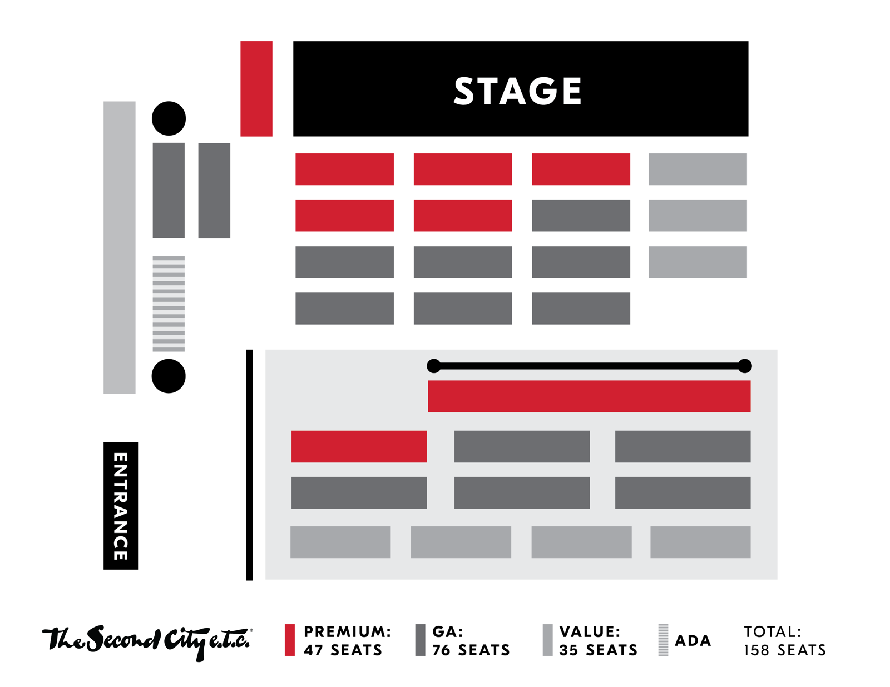

NICE SHIRT
The Second City Grad Revue. Original sketch comedy and improv from The Second City Conservatory's graduating class, developed over weeks of process shows and now on the e.t.c. stage in Chicago's Old Town.
"Would you rather it be mean?"
Dates & Tickets
Each performance has its own ticket link. Past dates are crossed off automatically. All shows are at The Second City Chicago e.t.c. Theater.
The Run
Opening night and the three ticketed performances, ending with the graduation show.
Previews
Monday-night process shows where the material was built and tested before the run.
All tickets are General Admission. Seats are assigned by the House Manager when you arrive, based on arrival time and party size. Prices are per ticket as listed at checkout.
The Cast
Two Grad Revue ensembles share the night. On the regular dates one ticket covers both; graduation night may be ticketed per group. Tap a card for a bio.
NICE SHIRT
Nine performers who turned improv into a finished sketch revue.
WAITING FOR THE PUNCHLINE
The other Grad Revue ensemble on the bill.
What is this show?
NICE SHIRT
"Would you rather it be mean?"
NICE SHIRT is a Second City Conservatory Graduation Show: a night of original sketch comedy written and performed by the nine people in the cast above, directed by Jeff Bouthiette. Over weeks of process shows the cast improvised, kept what landed, and rewrote it into finished scenes, songs and blackouts. What you'll see is the revue that came out the other end.
WAITING FOR THE PUNCHLINE
The other Conservatory Graduation Show on the bill, directed by Jess Mitolo, with Darwin Noguera on music and Vicky Diaz-Escobar stage managing. Ten performers who went through the same process: Monday-night previews, improv turned into written sketch, and a finished revue for the run.
It plays the same four nights as NICE SHIRT, and on the regular dates one ticket gets you both revues. Graduation night (Sept 21) may work differently: the two groups go on at 7:00 PM and 8:30 PM and could be ticketed separately, so check your ticket before you arrive.
The Grad Revue
The Second City Conservatory is an advanced six-level program dedicated to using improvisation as a tool to create a Second City-style revue, the cornerstone of The Second City Training Center. Students build on the fundamentals of improv, advance their scenic and character skills, explore forms and styles, and learn how to turn improvised scenes into written material for a satiric comedy revue.
Grad Revue 3 is the last level. Its ensembles perform Monday nights at the Training Center, with sets that mix original scenes and blackouts with some improvisation, and the run ends with a final graduation show. This is that show.
Sketch, not skits
- Sketch comedy Scripted, well-rehearsed scenes that are never, ever called "skits." (Most of us are mighty touchy about that one.)
- Improv The unscripted, spontaneous, collaborative art form Second City is famous for.
- Stand-up One comic, one mic. Think Jerry Seinfeld against a brick wall. At Second City that usually happens in the UP Comedy Club, not here.
A classic Second City revue is original sketches and songs sprinkled with a healthy dose of improv. Fully written and rehearsed, but no two shows are ever the same.
Promo
Flyers and art made for the run. Tap to open full size.
Digital Programs
The official programs for both revues, the same ones the QR codes at the theater point to. Cast and crew bios inside. Tap a cast card above to read a bio here without opening the PDF.
The Second City e.t.c. Theater
A 158-seat cabaret-style room on the second floor of Piper's Alley in Old Town, right next to The Second City Mainstage, home of Chicago improv and sketch comedy since 1959.
Seating
All tickets are General Admission. When you arrive, the House Manager assigns your seat based on your arrival time and how many parties are expected for that performance. All seating is at the House Manager's discretion.
The tables are close together because it's a nightclub. You'll always be seated with the people you came with, but expect to make some new friends, too.
The room holds 158: 47 premium, 76 general admission and 35 value seats, plus ADA seating.

Tier map from The Second City. Tap to enlarge.
Questions people ask
Quick answers for anyone finding NICE SHIRT while searching for Second City, Chicago improv or sketch comedy shows this September.
Is NICE SHIRT a Second City show?
Yes. NICE SHIRT is a Conservatory Graduation Show produced by The Second City Training Center in Chicago. It is the final revue of the Grad Revue program, performed by the graduating ensemble on The Second City's own e.t.c. stage.
Is it improv or sketch comedy?
Both. The revue is scripted sketch comedy written by the cast, built from improv over weeks of process shows, and each performance still includes live improvisation. No two nights are the same.
Where is the Chicago e.t.c. Theater?
Inside Piper's Alley at 230 W. North Ave., 2nd floor, in Chicago's Old Town neighborhood, next door to The Second City Mainstage at North and Wells. Self-park in the Piper's Alley garage; parking is not validated.
How much are tickets and where do I buy them?
General Admission is $12 ($12.25 on graduation night, which includes a $2.25 fee). Each date has its own link in the Dates & Tickets section above, sold through The Second City's box office site.
How long is the show and what time does it start?
Shows start at 8:00 PM. NICE SHIRT shares the night with a second Grad Revue ensemble, WAITING FOR THE PUNCHLINE, and on regular dates one ticket covers both. Graduation night on Sept 21 starts at 7:00 PM with NICE SHIRT on at 8:30 PM.
Is there an age limit?
The Second City does not admit children under 13, and ages 13 to 17 must be accompanied by an adult. There is no drink minimum.